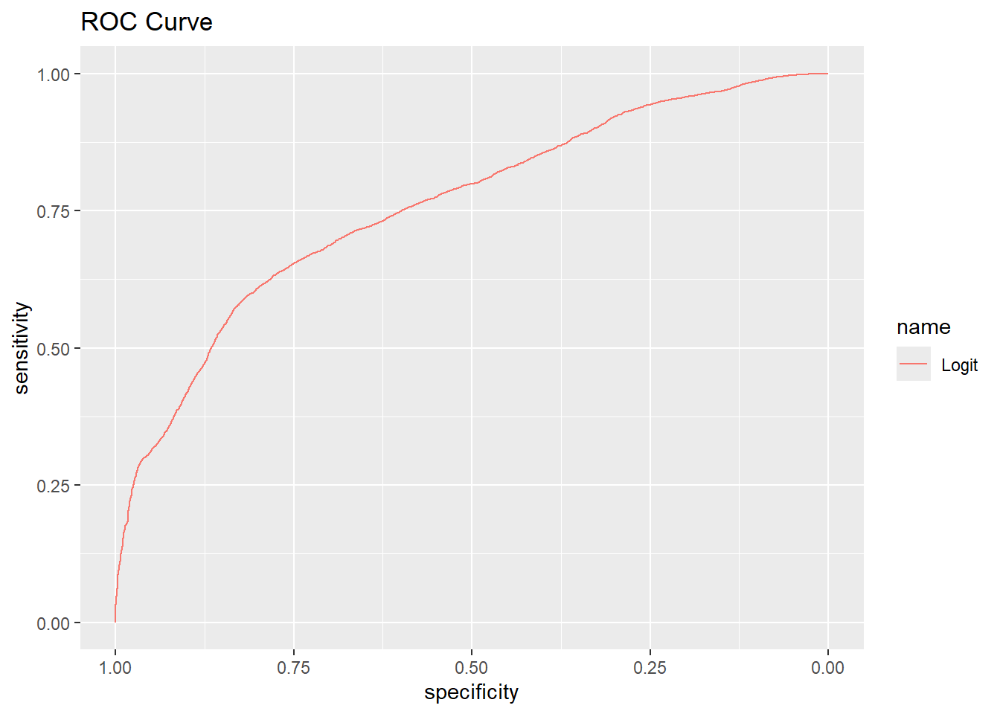

## Used packages that need to be installed to run code (and can be sourced easier from CRAN):
needed_packages <- c("tidyverse", "tidymodels", "knitr", "ggpubr", "pROC", "GGally", "caret", "caTools", "e1071", "MASS", "randomForest", "car") # Specify necessary packages
not_installed <- needed_packages[!(needed_packages %in% installed.packages()[ , "Package"])] # Extract not installed packages
if(length(not_installed)) install.packages(not_installed) # Install not installed packagesLab XX: Reproducibility
Due date
This lab is due on XX/XX. To be considered on time, the following must be done by the due date:
- Final
.qmdand.pdffiles submitted to Canvas
Reproducibility
In this lab, you will run code based on the data analysis in a published paper on identifying poisonous mushrooms. Based on the guided instructions and the errors you receive, you will fix the code to make it better run on your system. Then, you will assess the reproducibility of the given analysis and document what errors and inconsistencies were encountered. The text excerpts used in this lab were adapted off Wagner, Heider, and Hattab (2021)
Learning goals
By the end of the lab you will be able to…
Clone and utilize files from GitHub through RStudio
Reproduce the figures and analysis from a research study
Find and resolve errors which hinder reproducibility
Assess the reproducibility of the study
Getting started
Packages
You will use the following packages in today’s lab. To install any missing packages, run the following chunk:
The following chunk will load the packages required:
library(tidyverse)
library(tidymodels)
library(knitr)
library(ggpubr)
library(pROC)
library(GGally)
library(caret)
library(caTools)
library(e1071)
library(MASS)
library(randomForest)
library(car)Data
The data in this lab contains measures describing the physiology of hypothetical edible and poisonous mushrooms. The secondary set was developed based on the species listed in a mushroom identification text book and results of a dataset developed by UCI in 1987. They simulated several characteristics based on this information. The data were orginally presented and analyzed in Wagner, Heider, and Hattab (2021) and was obtained from the UCI Machine Learning Repository.
This analysis includes the following variables (after data cleaning and renaming):
cap-diameter: diameter of mushroom cap measured in cmcap-shape: bell, conical, convex, flat, sunken, spherical, otherscap-color: brown, buff, gray, green, pink, purple, red, white, yellow, blue, orange, blackdoes-bruise-or-bleed: yes, nogill-color: see cap colorstem-height: height of stem measured in cmArea: size of the rice grain measured in pixelsstem-width: width of stem measured in mmstem-color: see cap colorhas-ring: yes, nohabitat: grasses, leaves, meadows, paths, heaths, urban, waste, woodsseason: spring, summer, autumn, winter
Click here for the full data dictionary.
Exercises
Goal: The goal of the analysis is to resolve any errors or add any code necessary to validate and reproduce the provided figures.
Exercise 1
A primary issue in reproducibility is the public availability of code and raw data in published literature. To improve the reproducibility, many authors link a GitHub repository in their study. For the following reproducibility lab, the GitHub is linked as follows: https://github.com/jpro1219/Reproducibility-Lab
Run this code in your Terminal to clone the repository to your system.
git clone https://github.com/jpro1219/Reproducibility-Lab
Now, move the data file mushrooms.csv into your data structure. Then read the data into the system.
mushrooms <- read.csv("data/mushrooms.csv")View the dataframe in your environment tab. What character was used as the delimiter?
Semicolon ;
To allow the data to read in correctly, we will need to correctly specify the delimiter in the following chunk.
mushrooms <- read.csv("data/mushrooms.csv", sep=';') # Specify delimiter as ___Return to the dataframe and confirm that each observation is read correctly.
Exercise 2
The goal of this analysis will be to perform a logistic regression to predict whether a given mushroom is poisonous or edible. There are a few data cleaning considerations that must be taken into account before we begin.
First, we want to ensure there are no missing values for predictors in any observation, as this would make it difficult to test any data point, given the nature of these missing points is unknown.
## Remove columns with missing values
cleaned_mushrooms <- mushrooms
for (colname in colnames(mushrooms)){
if (sum(is.na(mushrooms[colname])) != 0){ # Columns with 1 or more missing values
cleaned_mushrooms[colname] <- NULL
}
}View the new dataframe cleaned_mushrooms in your environment tab. Do you see any columns with missing values? Which columns?
Yes, gill.spacing
These empty entries are written in the data set as a blank space, rather than NA. To fix this, we can return to our chunk that reads in data and make sure that all missing entries are known to be missing entries. Edit the na.strings parameter to turn all blank entries (““) to NA (”NA”)
mushrooms <- read.csv("data/mushrooms.csv", sep=';', na.strings=c("", "NA")) # Specify delimiter as ___, change na from blank to NANow run the removal chunk again:
## Remove columns with missing values
cleaned_mushrooms <- mushrooms
for (colname in colnames(mushrooms)){
if (sum(is.na(mushrooms[colname])) != 0){ # Columns with 1 or more missing values
cleaned_mushrooms[colname] <- NULL
}
}Exercise 3
Because our goal is to identify which mushrooms are poisonous, rather than edible, we want to make sure our outcome “success” is defined as poisonous.
By default, which will R define as a success?
Edible
To ensure that our “success” is defined as poisonous, we will create another category for class as a binary variable.
## Adding category for class as a binary variable
cleaned_mushrooms <- cleaned_mushrooms |>
mutate(
binary_class = as.factor(if_else(class == "Poisonous", 1, 0)))Exercise 4
Before we begin our regression, we should start by identifying some of the more influential predictor variables with some exploratory data analysis. While we have 18 possible predictor variables, we have limited to 10 of the more significant variables (where most entries have a non “none” value) to avoid overfitting and losing predictive power.
The figures from the analysis we are reproducing were a part of the repository you have cloned. Open up the cloned repository and locate the file: this figure should be organized under Reproducibility-Lab/Figures/Figure1_Exploratory.png.
Check the figure produced in the following chunk against the true figure.
## Plotting quantitative variables
cap_edible_plot <- ggplot(subset(cleaned_mushrooms, class == "Edible"), aes(cap.shape, cap.diameter)) +
labs(title="Edible Mushroom Cap Diameter by Shape", x="Cap Shape", y="Cap Diameter (cm)") +
geom_boxplot()
cap_poison_plot <- ggplot(subset(cleaned_mushrooms, class == "Poisonous"), aes(cap.shape, cap.diameter)) +
labs(title="Poisonous Mushroom Cap Diameter by Shape", x="Cap Shape", y="Cap Diameter (cm)") +
geom_boxplot()
cap_color_edible_plot <- ggplot(subset(cleaned_mushrooms, class=="Edible"), aes(cap.color, cap.diameter)) +
labs(title="Edible Mushroom Cap Diameter by Color", x="Cap Color", y="Cap Diameter (cm)") +
geom_boxplot()
cap_color_poison_plot <- ggplot(subset(cleaned_mushrooms, class=="Poisonous"), aes(cap.color, cap.diameter)) +
labs(title="Poisonous Mushroom Cap Diameter by Color", x="Cap Color", y="Cap Diameter (cm)") +
geom_boxplot()
edible_plot <- ggplot(subset(cleaned_mushrooms, class == 'Edible'), aes(x = stem.width, y = stem.height, color= stem.color)) +
labs(title="Stem dimensions for Edible Mushrooms", color="Has Ring", x="Stem Width (cm)", y="Stem Height (cm)") +
geom_point()
poison_plot <- ggplot(subset(cleaned_mushrooms, class == 'Poisonous'), aes(x = stem.width, y = stem.height, color=stem.color)) +
labs(title="Stem dimensions for Poisonous Mushrooms", color="Has Ring", x="Stem Width (cm)", y="Stem Height (cm)") +
geom_point()
## Plotting categorical variables
bruise_bleed <- as.data.frame(table(cleaned_mushrooms$does.bruise.or.bleed, cleaned_mushrooms$class))
bruise_plot <- ggplot(bruise_bleed, aes(Var1, Var2, fill=Freq)) +
labs(title="Heat map of Bruising/Bleeding by Class", x="Does Bruise/Bleed", y="Class") +
theme(legend.key.width = unit(1, 'cm')) +
geom_tile()
gill_color <- as.data.frame(table(cleaned_mushrooms$spore.print.color, cleaned_mushrooms$class))
gill_color_plot <- ggplot(gill_color, aes(Var1, Var2, fill=Freq)) +
labs(title="Heat map of Gill Color by Class", x="Gill Color", y="Class") +
theme(legend.key.width = unit(1, 'cm')) +
geom_tile()
habitat <- as.data.frame(table(cleaned_mushrooms$habitat, cleaned_mushrooms$class))
habitat_plot <- ggplot(habitat, aes(Var1, Var2, fill=Freq)) +
labs(title="Heat map of Mushroom Habitat by Class", x="Habitat", y="Class") +
theme(legend.key.width = unit(1, 'cm')) +
geom_tile()
season <- as.data.frame(table(cleaned_mushrooms$season, cleaned_mushrooms$class))
season_plot <- ggplot(season, aes(Var1, Var2, fill=Freq)) +
labs(title="Heat map of Season Mushroom is Found by Class", x="Season", y="Class") +
theme(legend.key.width = unit(1, 'cm')) +
geom_tile()
## Compile all plots into figure, organized by part of mushroom
ggarrange(cap_edible_plot, cap_poison_plot, cap_color_edible_plot, cap_color_poison_plot, edible_plot, poison_plot, bruise_plot, gill_color_plot, habitat_plot, season_plot, nrow = 5, ncol = 2)What plots differ from the true results?
Gill color by class uses another color set, stem dimensions uses a different color label than has.ring
To correct this, make sure that each plot references the correct column of cleaned_mushrooms
## Plotting quantitative variables
cap_edible_plot <- ggplot(subset(cleaned_mushrooms, class == "Edible"), aes(cap.shape, cap.diameter)) +
labs(title="Edible Mushroom Cap Diameter by Shape", x="Cap Shape", y="Cap Diameter (cm)") +
geom_boxplot()
cap_poison_plot <- ggplot(subset(cleaned_mushrooms, class == "Poisonous"), aes(cap.shape, cap.diameter)) +
labs(title="Poisonous Mushroom Cap Diameter by Shape", x="Cap Shape", y="Cap Diameter (cm)") +
geom_boxplot()
cap_color_edible_plot <- ggplot(subset(cleaned_mushrooms, class=="Edible"), aes(cap.color, cap.diameter)) +
labs(title="Edible Mushroom Cap Diameter by Color", x="Cap Color", y="Cap Diameter (cm)") +
geom_boxplot()
cap_color_poison_plot <- ggplot(subset(cleaned_mushrooms, class=="Poisonous"), aes(cap.color, cap.diameter)) +
labs(title="Poisonous Mushroom Cap Diameter by Color", x="Cap Color", y="Cap Diameter (cm)") +
geom_boxplot()
edible_plot <- ggplot(subset(cleaned_mushrooms, class == 'Edible'), aes(x = stem.width, y = stem.height, color= has.ring)) +
labs(title="Stem dimensions for Edible Mushrooms", color="Has Ring", x="Stem Width (cm)", y="Stem Height (cm)") +
geom_point()
poison_plot <- ggplot(subset(cleaned_mushrooms, class == 'Poisonous'), aes(x = stem.width, y = stem.height, color= has.ring)) +
labs(title="Stem dimensions for Poisonous Mushrooms", color="Has Ring", x="Stem Width (cm)", y="Stem Height (cm)") +
geom_point()
## Plotting categorical variables
bruise_bleed <- as.data.frame(table(cleaned_mushrooms$does.bruise.or.bleed, cleaned_mushrooms$class))
bruise_plot <- ggplot(bruise_bleed, aes(Var1, Var2, fill=Freq)) +
labs(title="Heat map of Bruising/Bleeding by Class", x="Does Bruise/Bleed", y="Class") +
theme(legend.key.width = unit(1, 'cm')) +
geom_tile()
gill_color <- as.data.frame(table(cleaned_mushrooms$gill.color, cleaned_mushrooms$class))
gill_color_plot <- ggplot(gill_color, aes(Var1, Var2, fill=Freq)) +
labs(title="Heat map of Gill Color by Class", x="Gill Color", y="Class") +
theme(legend.key.width = unit(1, 'cm')) +
geom_tile()
habitat <- as.data.frame(table(cleaned_mushrooms$habitat, cleaned_mushrooms$class))
habitat_plot <- ggplot(habitat, aes(Var1, Var2, fill=Freq)) +
labs(title="Heat map of Mushroom Habitat by Class", x="Habitat", y="Class") +
theme(legend.key.width = unit(1, 'cm')) +
geom_tile()
season <- as.data.frame(table(cleaned_mushrooms$season, cleaned_mushrooms$class))
season_plot <- ggplot(season, aes(Var1, Var2, fill=Freq)) +
labs(title="Heat map of Season Mushroom is Found by Class", x="Season", y="Class") +
theme(legend.key.width = unit(1, 'cm')) +
geom_tile()
## Compile all plots into figure, organized by part of mushroom
ggarrange(cap_edible_plot, cap_poison_plot, cap_color_edible_plot, cap_color_poison_plot, edible_plot, poison_plot, bruise_plot, gill_color_plot, habitat_plot, season_plot, nrow = 5, ncol = 2)
ggsave("Figures/Figure1_Exploratory.png", width = 20, height = 25)Exercise 5
To create a predictive regression model, we will want to have data to test that our algorithm is not trained on. So, we will randomly select a sample for training and testing. By setting the seed, we change the set of random numbers which will be produced.
In the given code, the comments have different suggestions for the seed and size of training set than the written code. It is unclear which is the correct set. We will perform our regression and check against the cloned repository (the excel workbook containing the regression is filed as Reproducibility-Lab/data/Logit_reg_model.xlsx) to determine which set is correct.
Seed, set as written
## Set seed to 105
set.seed(130)
## Take 75% of the cleaned mushrooms set for the training set, the remaining for the test set
mushroom_numbers <- sample(seq_len(nrow(cleaned_mushrooms)), size = 0.70*nrow(cleaned_mushrooms))
mushroom_train <- cleaned_mushrooms[mushroom_numbers,]
mushroom_test <- cleaned_mushrooms[-mushroom_numbers,]## Create regression model with all variables, no interaction terms to keep all uniform
logit_reg_model <- glm(binary_class ~ stem.height + cap.diameter + cap.shape + cap.color + does.bruise.or.bleed + gill.color + stem.width + has.ring + habitat + season, data = mushroom_train, family = "binomial")
tidy(logit_reg_model) |>
kable(digits=3)Adjusted seed, set
## Set seed to 105
set.seed(105)
## Take 75% of the cleaned mushrooms set for the training set, the remaining for the test set
mushroom_numbers <- sample(seq_len(nrow(cleaned_mushrooms)), size = 0.75*nrow(cleaned_mushrooms))
mushroom_train <- cleaned_mushrooms[mushroom_numbers,]
mushroom_test <- cleaned_mushrooms[-mushroom_numbers,]## Create regression model with all variables, no interaction terms to keep all uniform
logit_reg_model <- glm(binary_class ~ stem.height + cap.diameter + cap.shape + cap.color + does.bruise.or.bleed + gill.color + stem.width + has.ring + habitat + season, data = mushroom_train, family = "binomial")
tidy(logit_reg_model) |>
kable(digits=3)Which set matches the excel workbook given in the repository?
The second, where the comments match the code
Make sure the following chunk matches the correct chunk, so that the continued analysis will match the study.
## Set seed to 105
set.seed(105)
## Take 75% of the cleaned mushrooms set for the training set, the remaining for the test set
mushroom_numbers <- sample(seq_len(nrow(cleaned_mushrooms)), size = 0.75*nrow(cleaned_mushrooms))
mushroom_train <- cleaned_mushrooms[mushroom_numbers,]
mushroom_test <- cleaned_mushrooms[-mushroom_numbers,]## Create regression model with all variables, no interaction terms to keep all uniform
logit_reg_model <- glm(binary_class ~ stem.height + cap.diameter + cap.shape + cap.color + does.bruise.or.bleed + gill.color + stem.width + has.ring + habitat + season, data = mushroom_train, family = "binomial")Exercise 6
The following code will find and classify the predicted probabilities according to four thresholds, mutating them onto the training set. A common error when trying to reproduce code from published studies (in RStudio) is when multiple libraries contain the same function. In these cases, you may receive an error, because one function is perceived as being another of the same name.
While the following chunk may not show any errors, to ensure the mutate function is the correct mutate function, replace them with dplyr::mutate before each to ensure they are running correctly.
## Find probabilities and classify with standard threshold
logit_pred_prob <- predict.glm(logit_reg_model, newdata=mushroom_test, type="response")
mushroom_test <- dplyr::mutate(mushroom_test, logit_pred_class_30 = factor(ifelse(logit_pred_prob >0.30, 1, 0)))
mushroom_test <- dplyr::mutate(mushroom_test, logit_pred_class_40 = factor(ifelse(logit_pred_prob >0.40, 1, 0)))
mushroom_test <- dplyr::mutate(mushroom_test, logit_pred_class_50 = factor(ifelse(logit_pred_prob >0.50, 1, 0)))
mushroom_test <- dplyr::mutate(mushroom_test, logit_pred_class_60 = factor(ifelse(logit_pred_prob >0.60, 1, 0)))Exercise 7
To create a graphic to display the success of the regression, we have used ggplot to make one single heatmap of our confusion matrices in the following chunk. Validate what is returned with the heatmap in the repository (filed in Figures/Figure2_ConfMats.png).
## Compile all plots into figure, organized by part of mushroom
logit_conf_30 <- as.data.frame(table(mushroom_test$binary_class, mushroom_test$logit_pred_class_30))
logit_conf_plot_30 <- ggplot(logit_conf_30, aes(Var1, Var2, fill=Freq)) +
labs(title="Logistic Regression Confusion Matrix (Threshold = 0.30)", x="True Class", y="Predicted Class") +
theme(legend.key.width = unit(1, 'cm')) +
geom_tile() +
geom_text(aes(label=Freq), size = 5)
logit_conf_40 <- as.data.frame(table(mushroom_test$binary_class, mushroom_test$logit_pred_class_40))
logit_conf_plot_40 <- ggplot(logit_conf_40, aes(Var1, Var2, fill=Freq)) +
labs(title="Logistic Regression Confusion Matrix (Threshold = 0.40)", x="True Class", y="Predicted Class") +
theme(legend.key.width = unit(1, 'cm')) +
geom_tile() +
geom_text(aes(label=Freq), size = 5)
logit_conf_50 <- as.data.frame(table(mushroom_test$binary_class, mushroom_test$logit_pred_class_50))
logit_conf_plot_50 <- ggplot(logit_conf_50, aes(Var1, Var2, fill=Freq)) +
labs(title="Logistic Regression Confusion Matrix (Threshold = 0.50)", x="True Class", y="Predicted Class") +
theme(legend.key.width = unit(1, 'cm')) +
geom_tile() +
geom_text(aes(label=Freq), size = 5)
logit_conf_60 <- as.data.frame(table(mushroom_test$binary_class, mushroom_test$logit_pred_class_60))
logit_conf_plot_60 <- ggplot(logit_conf_60, aes(Var1, Var2, fill=Freq)) +
labs(title="Logistic Regression Confusion Matrix (Threshold = 0.60)", x="True Class", y="Predicted Class") +
theme(legend.key.width = unit(1, 'cm')) +
geom_tile() +
geom_text(aes(label=Freq), size = 5)
ggarrange(logit_conf_plot_30, logit_conf_plot_40, logit_conf_plot_50, logit_conf_plot_60, nrow = 1, ncol = 1)What is the difference between what was printed and what is filed?
Each heatmap has a single graphic instead of all being compiled
The issue lies in the ggarrange function. We need to specify the amount or rows and columns corresponding to amount of graphics we want and how we want the maps to fit together. Alter the numbers to match the printed output with what is in the file structure.
## Compile all plots into figure, organized by part of mushroom
logit_conf_30 <- as.data.frame(table(mushroom_test$binary_class, mushroom_test$logit_pred_class_30))
logit_conf_plot_30 <- ggplot(logit_conf_30, aes(Var1, Var2, fill=Freq)) +
labs(title="Logistic Regression Confusion Matrix (Threshold = 0.30)", x="True Class", y="Predicted Class") +
theme(legend.key.width = unit(1, 'cm')) +
geom_tile() +
geom_text(aes(label=Freq), size = 5)
logit_conf_40 <- as.data.frame(table(mushroom_test$binary_class, mushroom_test$logit_pred_class_40))
logit_conf_plot_40 <- ggplot(logit_conf_40, aes(Var1, Var2, fill=Freq)) +
labs(title="Logistic Regression Confusion Matrix (Threshold = 0.40)", x="True Class", y="Predicted Class") +
theme(legend.key.width = unit(1, 'cm')) +
geom_tile() +
geom_text(aes(label=Freq), size = 5)
logit_conf_50 <- as.data.frame(table(mushroom_test$binary_class, mushroom_test$logit_pred_class_50))
logit_conf_plot_50 <- ggplot(logit_conf_50, aes(Var1, Var2, fill=Freq)) +
labs(title="Logistic Regression Confusion Matrix (Threshold = 0.50)", x="True Class", y="Predicted Class") +
theme(legend.key.width = unit(1, 'cm')) +
geom_tile() +
geom_text(aes(label=Freq), size = 5)
logit_conf_60 <- as.data.frame(table(mushroom_test$binary_class, mushroom_test$logit_pred_class_60))
logit_conf_plot_60 <- ggplot(logit_conf_60, aes(Var1, Var2, fill=Freq)) +
labs(title="Logistic Regression Confusion Matrix (Threshold = 0.60)", x="True Class", y="Predicted Class") +
theme(legend.key.width = unit(1, 'cm')) +
geom_tile() +
geom_text(aes(label=Freq), size = 5)
ggarrange(logit_conf_plot_30, logit_conf_plot_40, logit_conf_plot_50, logit_conf_plot_60, nrow = 2, ncol = 2)
ggsave("Figures/Figure2_ConfMats.png", width = 20, height = 15)Exercise 8
To evaluate the strengths of these models, we will compute precision, accuracy, and specificity, and then graph them.
## Calculate accuracy and f2 from the confusion matrix
TN <- logit_conf_30[1,4] # Set all values on conf matrix
FP <- logit_conf_30[3,4]
FN <- logit_conf_30[2,4]
TP <- logit_conf_30[4,4]
precision_30 <- TP/(TP + FP) # Apply formula for precision
accuracy_30 <- (TP + TN) / sum(logit_conf_30[,3])
specificity_30 <- TN / (TN + FP)
TN <- logit_conf_40[1,4] # Set all values on conf matrix
FP <- logit_conf_40[3,4]
FN <- logit_conf_40[2,4]
TP <- logit_conf_40[4,4]
precision_40 <- TP/(TP + FP) # Apply formula for precision
accuracy_40 <- (TP + TN) / sum(logit_conf_40[,3])
specificity_40 <- TN / (TN + FP)
TN <- logit_conf_50[1,4] # Set all values on conf matrix
FP <- logit_conf_50[3,4]
FN <- logit_conf_50[2,4]
TP <- logit_conf_50[4,4]
precision_50 <- TP/(TP + FP) # Apply formula for precision
accuracy_50 <- (TP + TN) / sum(logit_conf_60[,3])
specificity_50 <- TN / (TN + FP)
TN <- logit_conf_60[1,4] # Set all values on conf matrix
FP <- logit_conf_60[3,4]
FN <- logit_conf_60[2,4]
TP <- logit_conf_60[4,4]
precision_60 <- TP/(TP + FP) # Apply formula for precision
accuracy_60 <- (TP + TN) / sum(logit_conf_60[,3])
specificity_60 <- TN / (TN + FP)
## Plot accuracy, precision, and specificity together
models <- c("0.30 Threshold", "0.40 Threshold", "0.50 Threshold", "0.60 Threshold")
accuracy <- c(accuracy_30, accuracy_40, accuracy_50, accuracy_60)
precision <- c(precision_30, precision_40, precision_50, precision_60)
specificity <- c(specificity_30, specificity_40, specificity_50, specificity_60)
model_ratings <- data.frame(models, accuracy, precision, specificity)
Accuracy_plot <- ggplot(model_ratings, aes(x = models, y=accuracy)) +
labs(title="Model Accuracy", x="Model Type", y="Accuracy") +
geom_bar(stat = "identity")
Precision_plot <- ggplot(model_ratings, aes(x = models, y=precision)) +
labs(title="Model Precision", x="Model Type", y="Precision") +
geom_bar(stat = "identity")
Specificity_plot <- ggplot(model_ratings, aes(x = models, y=specificity)) +
labs(title="Model Precision", x="Model Type", y="Specificity") +
geom_bar(stat = "identity")
ggarrange(Accuracy_plot, Precision_plot, Specificity_plot, nrow = 1, ncol = 3)
scoring <- data.frame(Model=c("Accuracy", "Precision", "Specificity"), thirty = c(accuracy_30, precision_30, specificity_30), forty = c(accuracy_40, precision_40, specificity_40), fifty = c(accuracy_50, precision_50, specificity_50), sixty = c(accuracy_60, precision_60, specificity_60))
kable(scoring, digits = 3)Copy the error message from running this chunk of code below:
Error in data.frame(models, accuracy, precision, specificity) : arguments imply differing number of rows: 4, 0
This type of error is symptomatic of index errors. Open one of the logit_conf dataframes in your R environment. Which column has the frequencies?
3
In brackets, are formatted [row, column], so for all of the TN, FP, FN, and TPs that refer to indices, they list an incorrect index for column. In general, using numerical indices should be avoided, as reproducibility is aided by clear references to rows and columns of tables.
## Calculate accuracy and f2 from the confusion matrix
TN <- logit_conf_30[1,3] # Set all values on conf matrix
FP <- logit_conf_30[3,3]
FN <- logit_conf_30[2,3]
TP <- logit_conf_30[4,3]
precision_30 <- TP/(TP + FP) # Apply formula for precision
accuracy_30 <- (TP + TN) / sum(logit_conf_30[,3])
specificity_30 <- TN / (TN + FP)
TN <- logit_conf_40[1,3] # Set all values on conf matrix
FP <- logit_conf_40[3,3]
FN <- logit_conf_40[2,3]
TP <- logit_conf_40[4,3]
precision_40 <- TP/(TP + FP) # Apply formula for precision
accuracy_40 <- (TP + TN) / sum(logit_conf_40[,3])
specificity_40 <- TN / (TN + FP)
TN <- logit_conf_50[1,3] # Set all values on conf matrix
FP <- logit_conf_50[3,3]
FN <- logit_conf_50[2,3]
TP <- logit_conf_50[4,3]
precision_50 <- TP/(TP + FP) # Apply formula for precision
accuracy_50 <- (TP + TN) / sum(logit_conf_60[,3])
specificity_50 <- TN / (TN + FP)
TN <- logit_conf_60[1,3] # Set all values on conf matrix
FP <- logit_conf_60[3,3]
FN <- logit_conf_60[2,3]
TP <- logit_conf_60[4,3]
precision_60 <- TP/(TP + FP) # Apply formula for precision
accuracy_60 <- (TP + TN) / sum(logit_conf_60[,3])
specificity_60 <- TN / (TN + FP)
## Plot accuracy, precision, and specificity together
models <- c("0.30 Threshold", "0.40 Threshold", "0.50 Threshold", "0.60 Threshold")
accuracy <- c(accuracy_30, accuracy_40, accuracy_50, accuracy_60)
precision <- c(precision_30, precision_40, precision_50, precision_60)
specificity <- c(specificity_30, specificity_40, specificity_50, specificity_60)
model_ratings <- data.frame(models, accuracy, precision, specificity)
Accuracy_plot <- ggplot(model_ratings, aes(x = models, y=accuracy)) +
labs(title="Model Accuracy", x="Model Type", y="Accuracy") +
geom_bar(stat = "identity")
Precision_plot <- ggplot(model_ratings, aes(x = models, y=precision)) +
labs(title="Model Precision", x="Model Type", y="Precision") +
geom_bar(stat = "identity")
Specificity_plot <- ggplot(model_ratings, aes(x = models, y=specificity)) +
labs(title="Model Precision", x="Model Type", y="Specificity") +
geom_bar(stat = "identity")
ggarrange(Accuracy_plot, Precision_plot, Specificity_plot, nrow = 1, ncol = 3)
ggsave("Figures/Figure3_Scoring.png", width = 20, height = 10)
scoring <- data.frame(Model=c("Accuracy", "Precision", "Specificity"), thirty = c(accuracy_30, precision_30, specificity_30), forty = c(accuracy_40, precision_40, specificity_40), fifty = c(accuracy_50, precision_50, specificity_50), sixty = c(accuracy_60, precision_60, specificity_60))
kable(scoring, digits = 3)| Model | thirty | forty | fifty | sixty |
|---|---|---|---|---|
| Accuracy | 0.635 | 0.654 | 0.684 | 0.696 |
| Precision | 0.610 | 0.642 | 0.704 | 0.780 |
| Specificity | 0.254 | 0.414 | 0.614 | 0.781 |
Exercise 9
To further evaluate the strength of this logistic regression model, without selecting specific thresholds, we will construct an ROC Curve and calculate the area under the curve.
## Create ROC plots for each
roc.logit <- roc(as.numeric(mushroom_test$binary_class), logit_pred_prob)
## Plot ROC Curve
ggroc(list(Logit = roc.logit)) +
labs(title = "ROC Curve")
ggsave("Figures/Figure4_ROCCurve.png", width = 15, height = 10)Looking at the file in Figures/Figure4_ROCCurve.png, does this figure appear to match?
Yes
Now, we will calculate the area under curve to evaluate how close to a perfect model it can be. The following chunk creates and displays a table of the value.
## Create table with auc of the roc
auc <- data.frame(Model=c("Logistic Regression"), AUC=c(auc(roc.logit)))
kable(scoring, digits = 3)Clearly, this table is not displaying AUC. Parse through the chunk and look for the error. What is causing the problem?
The kable is for the wrong dataframe
In the chunk below, make the edit to fix the chunk.
## Create table with aucs of the rocs
auc <- data.frame(Model=c("Logistic Regression"), AUC=c(auc(roc.logit)))
kable(auc, digits = 3)| Model | AUC |
|---|---|
| Logistic Regression | 0.759 |
Exercise 10
What is a recommendation you can make to avoid similar reproducibility in the process of creating similar code? Think of the kind of errors and fixes you’ve made and take into account that these issues were replicated from the same variety of issues in other studies’ code.
Avoid using number subscripts, understanding libraries and specifying where there is overlap, rerunning code before publishing, etc
References
Wagner, Dennis, Dominik Heider, and Georges Hattab. 2021. “Mushroom Data Creation, Curation, and Simulation to Support Classification Tasks.” Scientific Reports 11 (1): 8134. https://doi.org/10.1038/s41598-021-87602-3.